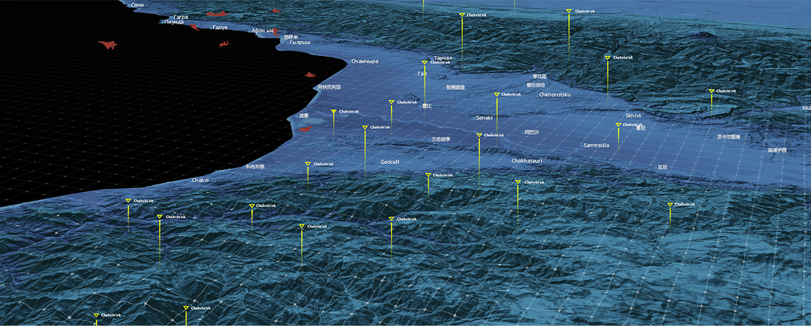
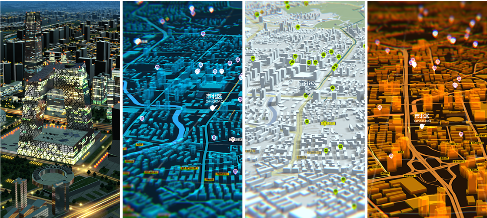

功能亮点

-

瓦片数据服务
可以提供多种地图瓦片数据服务，包括政区图、卫星影像、地形图等，地图数据涵盖全球范围，最高精度可达每像素1米。
-

要素数据服务
支持各类矢量地图要素数据服务，包括各级道路、公共设施、企业建筑、行政区划、海洋边界、等高线、自然环境等。
-

高程数据服务
提供全球陆地高程数据服务，支持可视化系统三维地形显示。高程数据最高精度可达每像素30米，并支持线性插值为20/10/5米等更高。
-

数据采集服务
提供地图数据、要素数据、高程数据等网络数据采集服务，支持客户自有地理信息数据导入，满足客户对地图数据的特定需求。
-

数据转换校正服务
提供各类数据投影坐标转换服务，如WGS84、墨卡托、北京54、西安80和CGCS2000等；提供坐标偏移校正服务，实现不同来源数据的叠加显示。
-

多种地图风格可选
支持详细定义地图风格，并标配多种风格可供选择，适应不同的可视化系统需求，实现炫酷的地图显示效果。